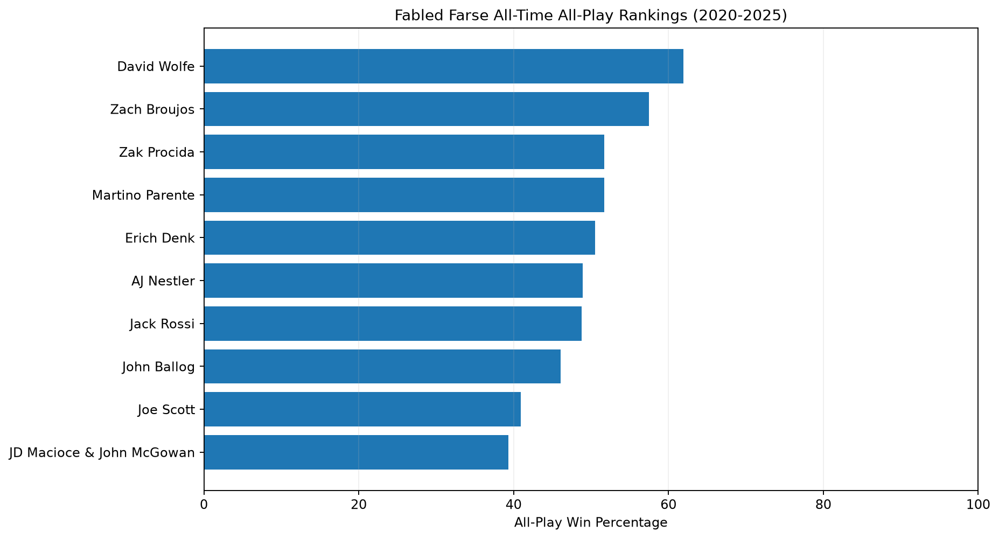
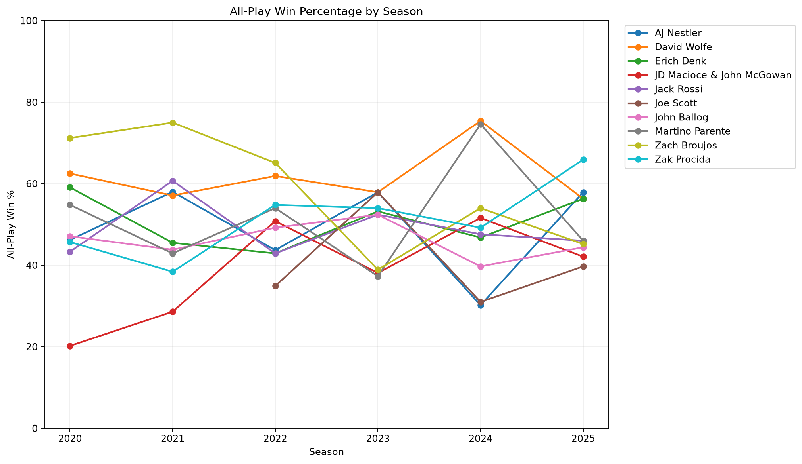
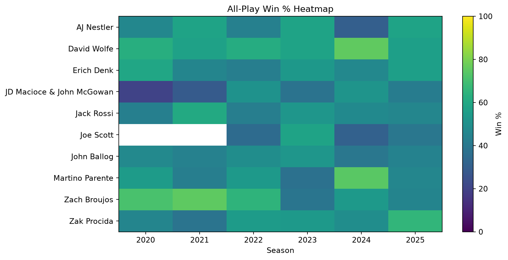

🏆 Fabled Farse: All-Time All-Play
Seasons 2020-2025 • Loaded seasons: 2020, 2021, 2022, 2023, 2024, 2025
How this works: For every completed regular-season week, each manager's score is compared with every other manager who played that same week. A win is one score higher, a loss is one score lower, and a tie is half a win for win-percentage purposes. This is schedule-independent and does not replace actual head-to-head standings. In 2020 and 2021, JD Macioce and John McGowan are treated as one virtual team: their weekly fantasy scores are averaged first, so they receive one team's worth of all-play comparisons rather than two. From 2022 onward, their combined team's actual score is used.
All-Time All-Play KingDavid Wolfe61.9% (446-274-0)
Best Single SeasonDavid Wolfe2024: 75.4%
Lowest Single-Season Win %JD Macioce & John McGowan2020: 20.2%
Most Consistent (Std. Dev.)John Ballog4.5 percentage-point standard deviation
All-Time Standings
| Result | Rank | Owner | Wins | Losses | Ties | Comparisons | Win % | Seasons |
|---|---|---|---|---|---|---|---|---|
| 1 | David Wolfe | 446 | 274 | 0 | 720 | 61.9 | 6 | |
| 2 | Zach Broujos | 414 | 306 | 0 | 720 | 57.5 | 6 | |
| 3 | Martino Parente | 372 | 348 | 0 | 720 | 51.7 | 6 | |
| 4 | Zak Procida | 372 | 347 | 1 | 720 | 51.7 | 6 | |
| 5 | Erich Denk | 363 | 356 | 1 | 720 | 50.5 | 6 | |
| 6 | AJ Nestler | 352 | 368 | 0 | 720 | 48.9 | 6 | |
| 7 | Jack Rossi | 351 | 369 | 0 | 720 | 48.8 | 6 | |
| 8 | John Ballog | 332 | 388 | 0 | 720 | 46.1 | 6 | |
| 9 | Joe Scott | 206 | 298 | 0 | 504 | 40.9 | 4 | |
| 10 | JD Macioce & John McGowan | 283 | 437 | 0 | 720 | 39.3 | 6 |
All-Time Awards & Records
All-Time All-Play KingDavid Wolfe — 61.9%
Most All-Play WinsDavid Wolfe — 446 wins
Most All-Play LossesJD Macioce & John McGowan — 437 losses
Best Single SeasonDavid Wolfe — 2024: 75.4%
Worst Single SeasonJD Macioce & John McGowan — 2020: 20.2%
Most Consistent (2+ seasons)John Ballog — 4.5 pp standard deviation
Biggest ImprovementJD Macioce & John McGowan — +21.9 pp (2020 to 2025)
Biggest DeclineZach Broujos — -26.0 pp (2020 to 2025)
Most Schedule-FavoredErich Denk — actual record 57.8% vs all-play 50.5% (+7.3 pp)
Most Schedule-UnfavoredJohn Ballog — actual record 42.2% vs all-play 46.1% (-3.9 pp)
All-Time Leaderboard

Year-over-Year Trends

Season-by-Season Heatmap

Actual Record vs. All-Play Expectation
Positive gaps indicate a better actual win percentage than the same-week scoring results would suggest; negative gaps indicate a tougher-than-average schedule outcome.
| Result | Owner | Actual Wins | Actual Losses | Actual Ties | Actual Win % | Wins | Losses | Ties | Win % | Actual vs All-Play Gap |
|---|---|---|---|---|---|---|---|---|---|---|
| Erich Denk | 48 | 35 | 0 | 57.8 | 363 | 356 | 1 | 50.5 | 7.3 | |
| David Wolfe | 54 | 29 | 0 | 65.1 | 446 | 274 | 0 | 61.9 | 3.2 | |
| Jack Rossi | 43 | 40 | 0 | 51.8 | 351 | 369 | 0 | 48.8 | 3.0 | |
| Martino Parente | 44 | 39 | 0 | 53.0 | 372 | 348 | 0 | 51.7 | 1.3 | |
| Joe Scott | 23 | 33 | 0 | 41.1 | 206 | 298 | 0 | 40.9 | 0.2 | |
| Zach Broujos | 47 | 36 | 0 | 56.6 | 414 | 306 | 0 | 57.5 | -0.9 | |
| Zak Procida | 42 | 41 | 0 | 50.6 | 372 | 347 | 1 | 51.7 | -1.1 | |
| AJ Nestler | 38 | 45 | 0 | 45.8 | 352 | 368 | 0 | 48.9 | -3.1 | |
| JD Macioce & John McGowan | 28 | 52 | 3 | 35.5 | 283 | 437 | 0 | 39.3 | -3.8 | |
| John Ballog | 35 | 48 | 0 | 42.2 | 332 | 388 | 0 | 46.1 | -3.9 |
First-to-Latest Season Improvement
| Owner | First Season | First Win % | Latest Season | Latest Win % | Change (pp) | Seasons |
|---|---|---|---|---|---|---|
| JD Macioce & John McGowan | 2020 | 20.2 | 2025 | 42.1 | 21.9 | 6 |
| Zak Procida | 2020 | 45.7 | 2025 | 65.9 | 20.2 | 6 |
| AJ Nestler | 2020 | 46.2 | 2025 | 57.9 | 11.7 | 6 |
| Joe Scott | 2022 | 34.9 | 2025 | 39.7 | 4.8 | 4 |
| Jack Rossi | 2020 | 43.3 | 2025 | 46.0 | 2.7 | 6 |
| John Ballog | 2020 | 47.1 | 2025 | 44.4 | -2.7 | 6 |
| Erich Denk | 2020 | 59.1 | 2025 | 56.3 | -2.8 | 6 |
| David Wolfe | 2020 | 62.5 | 2025 | 56.3 | -6.2 | 6 |
| Martino Parente | 2020 | 54.8 | 2025 | 46.0 | -8.8 | 6 |
| Zach Broujos | 2020 | 71.2 | 2025 | 45.2 | -26.0 | 6 |
Year-by-Year Standings
| Result | Season | Owner | Wins | Losses | Ties | Comparisons | Win % |
|---|---|---|---|---|---|---|---|
| 2020 | Zach Broujos | 74 | 30 | 0 | 104 | 71.2 | |
| 2020 | David Wolfe | 65 | 39 | 0 | 104 | 62.5 | |
| 2020 | Erich Denk | 61 | 42 | 1 | 104 | 59.1 | |
| 2020 | Martino Parente | 57 | 47 | 0 | 104 | 54.8 | |
| 2020 | John Ballog | 49 | 55 | 0 | 104 | 47.1 | |
| 2020 | AJ Nestler | 48 | 56 | 0 | 104 | 46.2 | |
| 2020 | Zak Procida | 47 | 56 | 1 | 104 | 45.7 | |
| 2020 | Jack Rossi | 45 | 59 | 0 | 104 | 43.3 | |
| 2020 | JD Macioce & John McGowan | 21 | 83 | 0 | 104 | 20.2 | |
| 2021 | Zach Broujos | 84 | 28 | 0 | 112 | 75.0 | |
| 2021 | Jack Rossi | 68 | 44 | 0 | 112 | 60.7 | |
| 2021 | AJ Nestler | 65 | 47 | 0 | 112 | 58.0 | |
| 2021 | David Wolfe | 64 | 48 | 0 | 112 | 57.1 | |
| 2021 | Erich Denk | 51 | 61 | 0 | 112 | 45.5 | |
| 2021 | John Ballog | 49 | 63 | 0 | 112 | 43.8 | |
| 2021 | Martino Parente | 48 | 64 | 0 | 112 | 42.9 | |
| 2021 | Zak Procida | 43 | 69 | 0 | 112 | 38.4 | |
| 2021 | JD Macioce & John McGowan | 32 | 80 | 0 | 112 | 28.6 | |
| 2022 | Zach Broujos | 82 | 44 | 0 | 126 | 65.1 | |
| 2022 | David Wolfe | 78 | 48 | 0 | 126 | 61.9 | |
| 2022 | Zak Procida | 69 | 57 | 0 | 126 | 54.8 | |
| 2022 | Martino Parente | 68 | 58 | 0 | 126 | 54.0 | |
| 2022 | JD Macioce & John McGowan | 64 | 62 | 0 | 126 | 50.8 | |
| 2022 | John Ballog | 62 | 64 | 0 | 126 | 49.2 | |
| 2022 | AJ Nestler | 55 | 71 | 0 | 126 | 43.7 | |
| 2022 | Erich Denk | 54 | 72 | 0 | 126 | 42.9 | |
| 2022 | Jack Rossi | 54 | 72 | 0 | 126 | 42.9 | |
| 2022 | Joe Scott | 44 | 82 | 0 | 126 | 34.9 | |
| 2023 | AJ Nestler | 73 | 53 | 0 | 126 | 57.9 | |
| 2023 | David Wolfe | 73 | 53 | 0 | 126 | 57.9 | |
| 2023 | Joe Scott | 73 | 53 | 0 | 126 | 57.9 | |
| 2023 | Zak Procida | 68 | 58 | 0 | 126 | 54.0 | |
| 2023 | Erich Denk | 67 | 59 | 0 | 126 | 53.2 | |
| 2023 | Jack Rossi | 66 | 60 | 0 | 126 | 52.4 | |
| 2023 | John Ballog | 66 | 60 | 0 | 126 | 52.4 | |
| 2023 | Zach Broujos | 49 | 77 | 0 | 126 | 38.9 | |
| 2023 | JD Macioce & John McGowan | 48 | 78 | 0 | 126 | 38.1 | |
| 2023 | Martino Parente | 47 | 79 | 0 | 126 | 37.3 | |
| 2024 | David Wolfe | 95 | 31 | 0 | 126 | 75.4 | |
| 2024 | Martino Parente | 94 | 32 | 0 | 126 | 74.6 | |
| 2024 | Zach Broujos | 68 | 58 | 0 | 126 | 54.0 | |
| 2024 | JD Macioce & John McGowan | 65 | 61 | 0 | 126 | 51.6 | |
| 2024 | Zak Procida | 62 | 64 | 0 | 126 | 49.2 | |
| 2024 | Jack Rossi | 60 | 66 | 0 | 126 | 47.6 | |
| 2024 | Erich Denk | 59 | 67 | 0 | 126 | 46.8 | |
| 2024 | John Ballog | 50 | 76 | 0 | 126 | 39.7 | |
| 2024 | Joe Scott | 39 | 87 | 0 | 126 | 31.0 | |
| 2024 | AJ Nestler | 38 | 88 | 0 | 126 | 30.2 | |
| 2025 | Zak Procida | 83 | 43 | 0 | 126 | 65.9 | |
| 2025 | AJ Nestler | 73 | 53 | 0 | 126 | 57.9 | |
| 2025 | David Wolfe | 71 | 55 | 0 | 126 | 56.3 | |
| 2025 | Erich Denk | 71 | 55 | 0 | 126 | 56.3 | |
| 2025 | Jack Rossi | 58 | 68 | 0 | 126 | 46.0 | |
| 2025 | Martino Parente | 58 | 68 | 0 | 126 | 46.0 | |
| 2025 | Zach Broujos | 57 | 69 | 0 | 126 | 45.2 | |
| 2025 | John Ballog | 56 | 70 | 0 | 126 | 44.4 | |
| 2025 | JD Macioce & John McGowan | 53 | 73 | 0 | 126 | 42.1 | |
| 2025 | Joe Scott | 50 | 76 | 0 | 126 | 39.7 |
Who Beats Who? Same-Week All-Play Matrix
Each cell is wins-losses-ties when the row owner is compared with the column owner in the same season and week. N/A means there were no overlapping weeks.
| AJ Nestler | David Wolfe | Erich Denk | JD Macioce & John McGowan | Jack Rossi | Joe Scott | John Ballog | Martino Parente | Zach Broujos | Zak Procida | |
|---|---|---|---|---|---|---|---|---|---|---|
| Owner vs. Owner | ||||||||||
| AJ Nestler | — | 34-49-0 | 36-47-0 | 52-31-0 | 41-42-0 | 32-24-0 | 42-41-0 | 38-45-0 | 36-47-0 | 41-42-0 |
| David Wolfe | 49-34-0 | — | 56-27-0 | 60-23-0 | 49-34-0 | 36-20-0 | 52-31-0 | 48-35-0 | 47-36-0 | 49-34-0 |
| Erich Denk | 47-36-0 | 27-56-0 | — | 52-31-0 | 43-40-0 | 30-26-0 | 47-36-0 | 44-39-0 | 33-50-0 | 40-42-1 |
| JD Macioce & John McGowan | 31-52-0 | 23-60-0 | 31-52-0 | — | 37-46-0 | 31-25-0 | 38-45-0 | 33-50-0 | 30-53-0 | 29-54-0 |
| Jack Rossi | 42-41-0 | 34-49-0 | 40-43-0 | 46-37-0 | — | 30-26-0 | 44-39-0 | 40-43-0 | 36-47-0 | 39-44-0 |
| Joe Scott | 24-32-0 | 20-36-0 | 26-30-0 | 25-31-0 | 26-30-0 | — | 24-32-0 | 18-38-0 | 22-34-0 | 21-35-0 |
| John Ballog | 41-42-0 | 31-52-0 | 36-47-0 | 45-38-0 | 39-44-0 | 32-24-0 | — | 40-43-0 | 30-53-0 | 38-45-0 |
| Martino Parente | 45-38-0 | 35-48-0 | 39-44-0 | 50-33-0 | 43-40-0 | 38-18-0 | 43-40-0 | — | 36-47-0 | 43-40-0 |
| Zach Broujos | 47-36-0 | 36-47-0 | 50-33-0 | 53-30-0 | 47-36-0 | 34-22-0 | 53-30-0 | 47-36-0 | — | 47-36-0 |
| Zak Procida | 42-41-0 | 34-49-0 | 42-40-1 | 54-29-0 | 44-39-0 | 35-21-0 | 45-38-0 | 40-43-0 | 36-47-0 | — |
Consistency Rankings
Lower standard deviation means a manager's all-play win percentage varied less from season to season. This is descriptive, not a measure of skill independent of sample size.
| Owner | Seasons | Average_Season_Win_Pct | Best_Season_Win_Pct | Worst_Season_Win_Pct | Season_Win_Pct_Std |
|---|---|---|---|---|---|
| David Wolfe | 6 | 61.8 | 75.4 | 56.3 | 7.1 |
| Zach Broujos | 6 | 58.2 | 75.0 | 38.9 | 14.5 |
| Martino Parente | 6 | 51.6 | 74.6 | 37.3 | 13.1 |
| Zak Procida | 6 | 51.3 | 65.9 | 38.4 | 9.3 |
| Erich Denk | 6 | 50.6 | 59.1 | 42.9 | 6.5 |
| AJ Nestler | 6 | 49.0 | 58.0 | 30.2 | 11.2 |
| Jack Rossi | 6 | 48.8 | 60.7 | 42.9 | 6.8 |
| John Ballog | 6 | 46.1 | 52.4 | 39.7 | 4.5 |
| Joe Scott | 4 | 40.9 | 57.9 | 31.0 | 11.9 |
| JD Macioce & John McGowan | 6 | 38.6 | 51.6 | 20.2 | 12.4 |